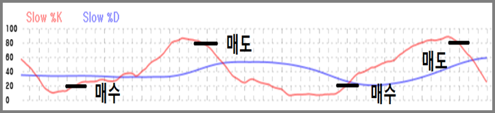
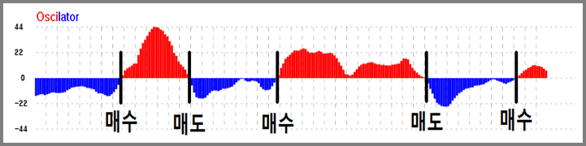
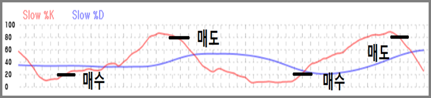

사이트 소개
캔들차트
캔들 차트에서 나타나는 패턴에 대한 설명을 제공하는 페이지 입니다. 차트 패턴에 대한 예시와 추세 등을 알려줍니다.
지표
지표는 캔들차트에서 나타나는 도구와 같습니다. 이 지표를 이용하여 차트가 나타내는 값들을 분석합니다. 지표에 대한 예시와 공식, 분석 방법들이 있습니다.
종목 추천
유전알고리즘을 이용하여 사용자에게 투자할 가치가 있는 종목을 추천해줍니다. 종목마다 최대 5년간 분석하여 모의투자시 가장
좋은 수익률을 보여주는 Slow Stoch와 MACD를 구합니다. 구해진 지표들을 이용해 모의 투자시 매도와 매수가
나타나는 시점을 알려줍니다.

Slow
Stoch의 %K 가 80을 상향 돌팔할 때 매수, 20을 하향 돌파할 때 매도 합니다.

MACD의 Oscillator가
0을 상향 돌파할 때 매수, 0을 하향 돌파할 때 매도 합니다.

Slow Stoch의 %K 가 80을 상향 돌팔할 때 매수, 20을 하향 돌파할 때 매도 합니다.
MACD의 Oscillator가 0을 상향 돌파할 때 매수, 0을 하향 돌파할 때 매도 합니다.